Let's say you have a project with Cypress end-to-end tests. You might be thinking of converting the specs from JavaScript to TypeScript language. This blog post describes how I have converted one such project in my repo bahmutov/test-todomvc-using-app-actions.
- Step 1: Decide why you want to convert
- Step 2: Configure the intelligent code completion
- Step 3: use jsconfig file
- Step 4: use JSDoc comments to give types
- Step 5: start checking types
- Step 6: Check types using TypeScript
- Step 7: Check types on CI
- Step 8: Extend the globals types
- Step 9: Turn the screws
- Step 10: Move specs to TypeScript
- Step 11: Fix the TS lint errors
- Step 12: Use JSON fixtures
- Step 13: Move to cypress.config.ts file
- Step 14: Define custom commands
- My thoughts
- See also
Step 1: Decide why you want to convert
The most important step is to decide what benefits you are seeking from the conversion. Does the team use TS to code and is used to its static types? Do you want to see the intelligent code completion when coding Cypress tests? Do you want to share code and types between the application and the tests? Do you plan to check the static types in the spec files on CI? During pre-commit hook?
Conversion might take some time and effort, so it is better be worth it. I mostly use just JavaScript Cypress specs together with JSDoc types for simplicity. But I definitely see why someone might want to use TS to code the E2E tests. Luckily, it is not "either / or" proposition. You can bring the static types into your Cypress project gradually and immediately enjoy some of the static typing benefits. Then you can progress through the rest of the code at your own pace.
Step 2: Configure the intelligent code completion
The first benefit of static types in Cypress specs is the intelligent code completion (IntelliSense) that pops up when you type Cypress cy.* commands, like cy.visit, etc. Without IntelliSense, when you hover over the cy.visit command, all you see is "any". Your code editor cannot help you write this or any other Cypress command (pun intended)
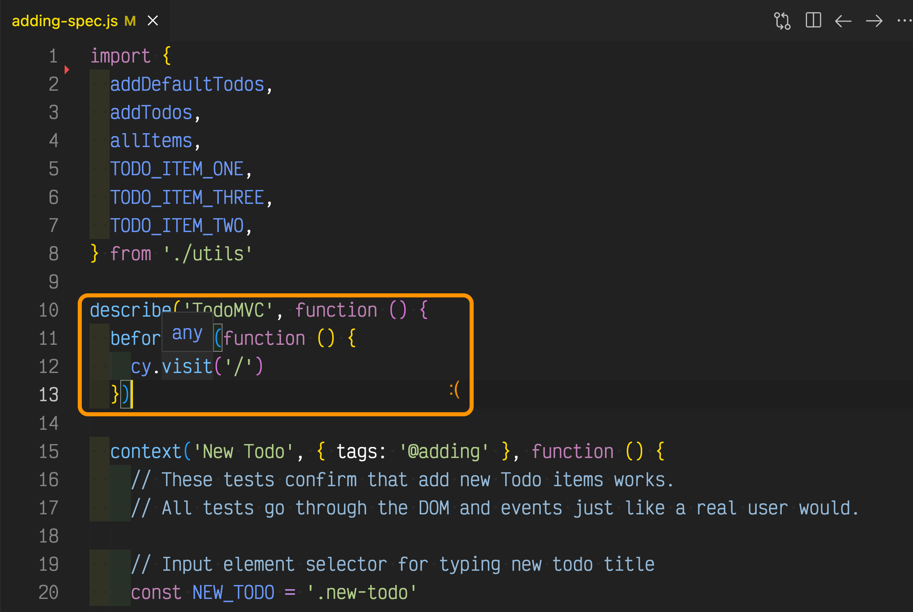
You can read the Cypress IntelliSense guide on how to set it up. In most modern code editors, I recommend starting with a special comment that tells the code editor to load TypeScript definitions for the global objects cy and Cypress.
1 | /// <reference types="cypress" /> |
Voila - the code editor goes to node_modules/cypress/package.json file, finds the "types": "types" property, and loads the TypeScript file node_modules/cypress/types/index.d.ts file that describes what Cypress and `cy are. Boom, your editor is helping you:
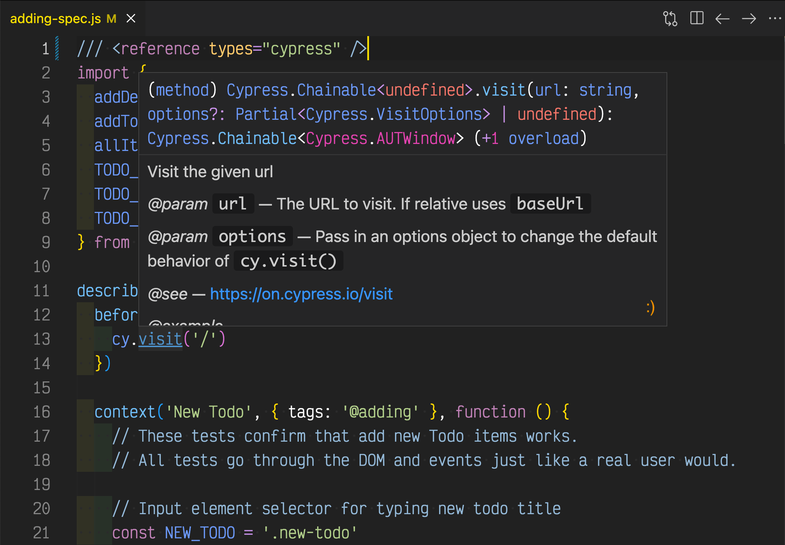
Step 3: use jsconfig file
Instead of adding the reference types comment to each JavaScript spec, we could use a jsconfig.json file at the root of our project. At least in VSCode editor this file can tell which types to load for all files.
1 | { |
Each Cypress JS spec file now automatically knows the cy, Cypress, etc.
You can watch me explaining the jsconfig.json file in the video Load Global Cypress Types In VSCode Using jsconfig.json File below:
I also explain using jsconfig.json file to load Cypress and 3rd party plugin types in my course Cypress Plugins.
Step 4: use JSDoc comments to give types
While coding our specs in JavaScript we use local variables, Cypress commands, etc. The code editor does not know the types of the variables we use. For example, the title variable in the below spec shows up as any
1 | let title |
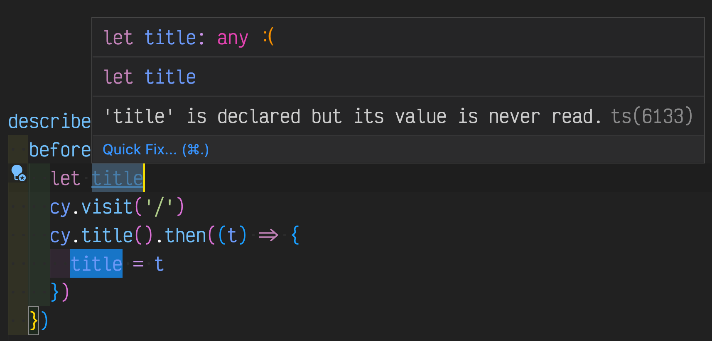
We can keep the specs in JavaScript and add a JSDoc type comment to tell our code editor what we intend for it to be.
1 | /** @type string */ |
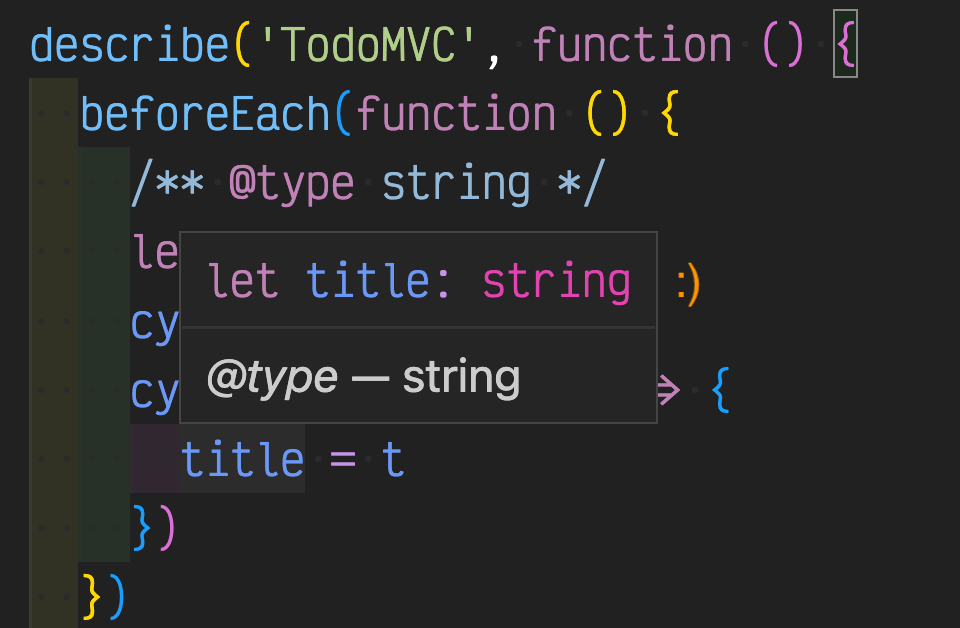
Ok, looks good. I use JSDoc types a lot, and I must admit they become cumbersome at some point. Even forcing a variable to be of a certain type is non-trivial and looks plain ugly. For example, to tell the code editor that something is really a string we need to cast it through an unknown:
1 | /** @type {any} */ |
Ughh.
Step 5: start checking types
Once your code editor "knows" the Cypress types, you can start checking them as you edit the files by adding // @ts-check directive. Let's say we pretend the title variable is a number, while the cy.title command yields a string.
1 | /** @type number */ |
VSCode by default does NOT warn us about the type mismatch.
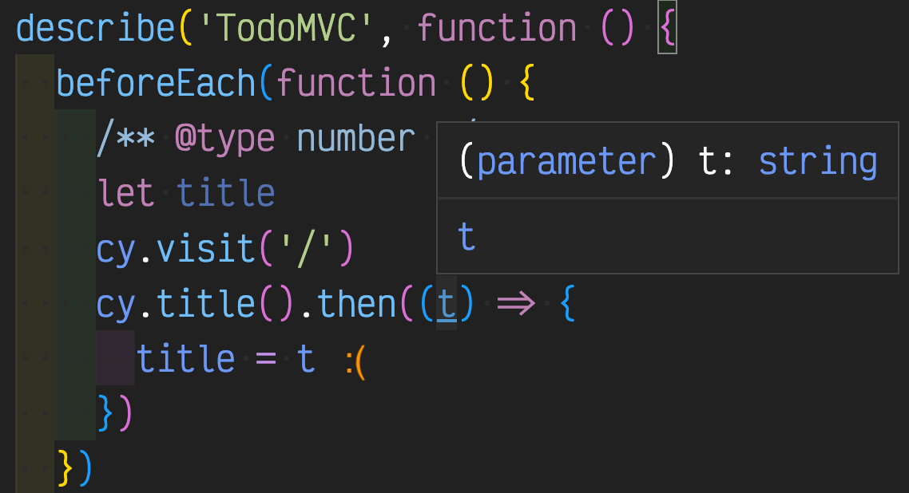
To tell the code editor to warn us on type mismatch, we can add a special comment // @ts-check to our JavaScript files. The comment must come before any regular code.
1 | // @ts-check |
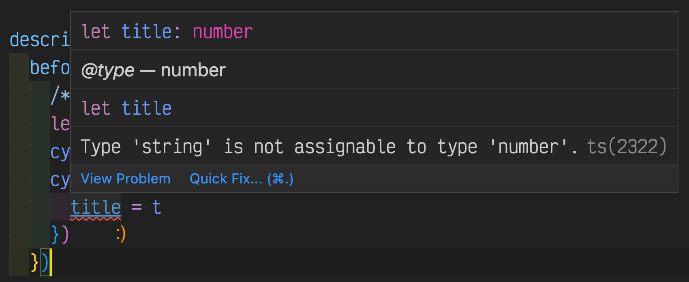
Step 6: Check types using TypeScript
If we are checking the types while the code editor is running, let's check it from the command line and from the CI. Let's install TypeScript compiler
1 | $ npm i -D typescript |
Add the lint command to the package.json file
1 | { |
Let's run the lint step from the command line to find any mistakes with npm run lint
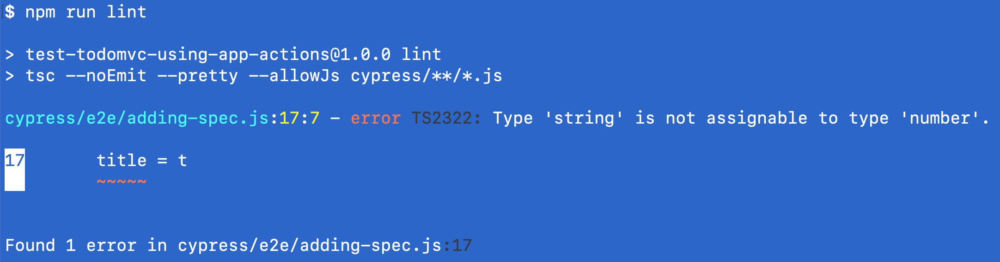
Tip: only the JS files with // @ts-check comment are checked, thus you can introduce type checking gradually into your project.
Step 7: Check types on CI
Let's run the types lint step and the sanity tests on CI using Cypress GitHub Action
1 | name: ci |
The CI service catches types mismatch in our specs
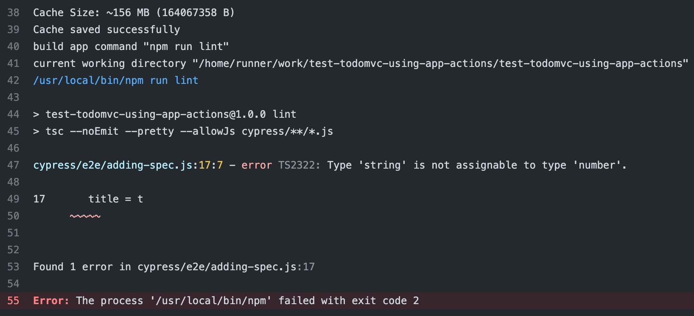
Step 8: Extend the globals types
If your Cypress project is using any custom commands, like cy.addTodo or extends the window object by storing and passing custom properties, you might need to extend the global types to pass the types checks. For adding types for custom commands, see my blog post Writing a Custom Cypress Command. In our project, the application sets the window.model property when running inside a Cypress test.
1 | var model = new app.TodoModel('react-todos') |
This allows the test to grab the window.model and use the application's code to quickly execute application actions, giving it superpowers.
1 | // spy on model.inform method called by the app |
To make sure our types "know" what the cy.window().its('model') yields, we need to extends the window type definition. We can create a file cypress/e2e/model.d.ts that just describes the new types
1 | // Describes the TodoMVC model instance. |
To use this file during code editor's type checks include it in the list of files in the jsconfig.json file
1 | { |
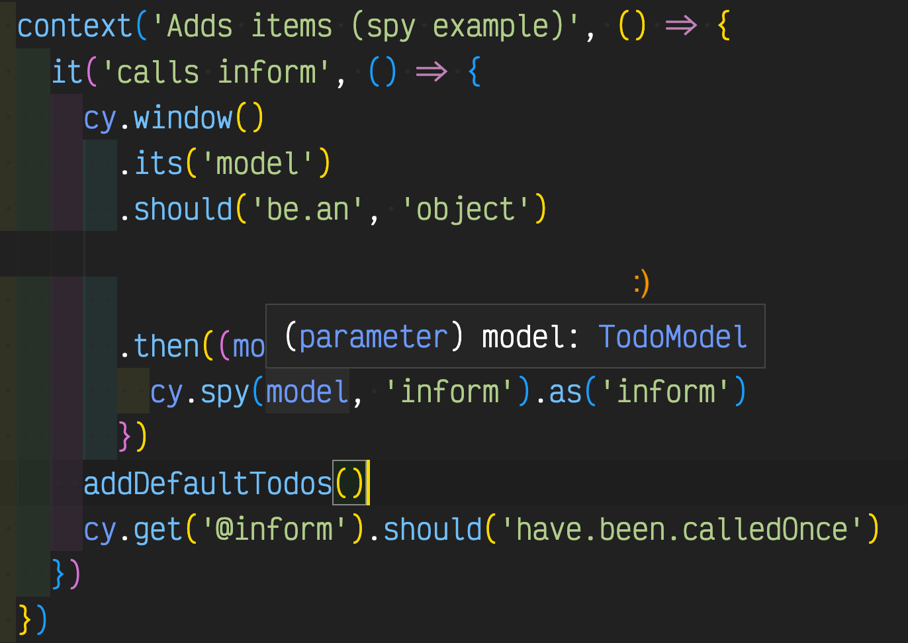
Step 9: Turn the screws
Now that we have some initial types and are linting them, let's make the types stricter. For the code editor, you can turn the strict type checks using the jsconfig.json file
1 | { |
Tip: if you see too many errors, turn the strict option off and instead turn the checks like noImplicitAny, etc one by one.
For linting types from the command line, add the option to the NPM script command
1 | { |
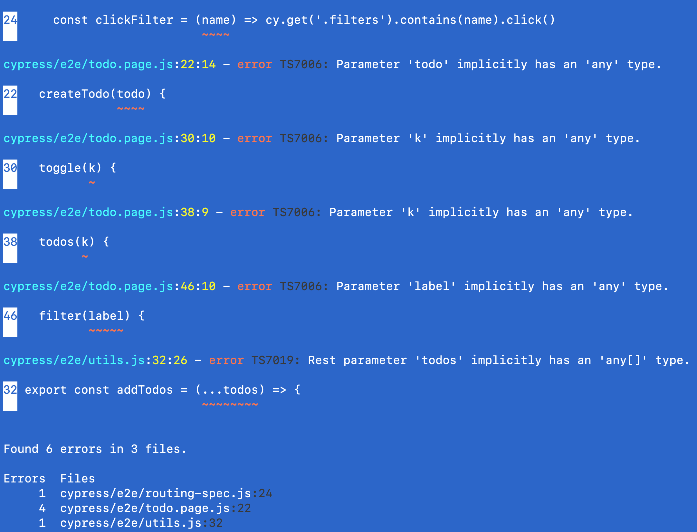
Some of the errors are easy to fix. For example, the clickFilter function just needs the @param type in its existing JSDoc comment. If we add @param {string} name the TS error goes away.
1 | /** |
Similarly, we can add parameter types to the page object methods
1 | { |
TypeScript compiler is even smart enough to figure out the runtime type checks. For example, for optional k parameter, the if branch cannot have undefined
1 | /** |
Finally, for anything complicated, but working in reality, I just ignore the error using the @ts-ignore directive.
1 | // @ts-ignore |
You can ignore specific errors instead of ignoring all possible TS errors in the next line using TS error codes like this:
1 | // @ts-ignore TS6133 |
If the spec file has too many TS errors to be fixed right away, you can tell the TS compiler to ignore it completely using the // @ts-nocheck comment at the top:
1 | // TODO fix the types later |
Step 10: Move specs to TypeScript
- Add the
.tsfiles to the E2E spec pattern in thecypress.config.jsfile
1 | const { defineConfig } = require('cypress') |
- Take a spec and change its file extension to
.ts. For example, I have renamedadding-spec.jstoadding-spec.ts
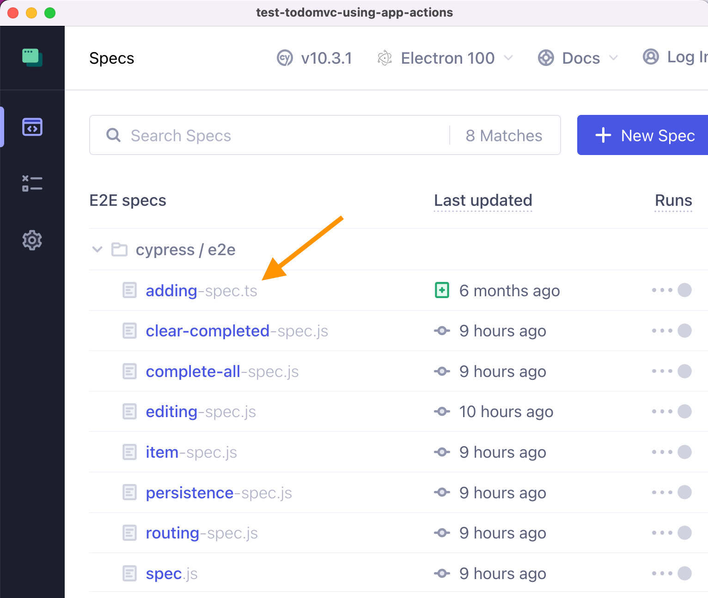
- Add the TS files to the list of included files in
jsconfig.json
1 | { |
- Click on the TS spec file. You should see an error message 🤯
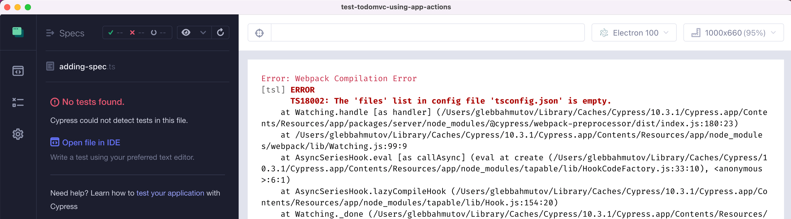
- Rename the file
jsconfig.jsontotsconfig.jsonand add the options to allow JavaScript and do not emit JS
1 | { |
Note: I could not make the tsconfig.json work without listing at least one spec in its files list. Weird.
Now we can type anything in our spec files using "normal" TypScript, which is very convenient
1 | let title: string |
You can remove some of the JSDoc typings and use "normal" argument variable declarations
1 | /** |
You can now move more and more spec files to TypeScript and ensure they all have sound types.
Step 11: Fix the TS lint errors
Once the specs move to TypeScript, you can adjust the lint command in the package.json file
1 | { |
The command becomes stricter, as TypeScript now validates using only the settings specified in the tsconfig.json which seems to be stricter than using the jsconfig.json file.
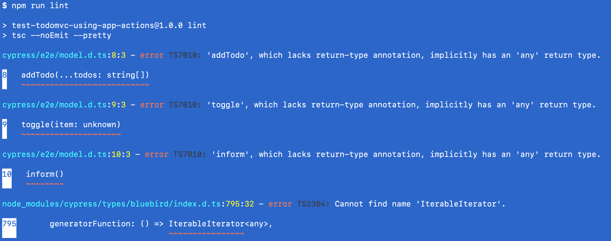
We can fix the top three errors by declaring the method return types in the model.d.ts file
1 | interface TodoModel { |
Let's fix the 3rd party cryptic errors like these ones
1 | node_modules/cypress/types/bluebird/index.d.ts:795:32 - error TS2304: Cannot find name 'IterableIterator'. |
Let's tell our TS compiler that the spec is meant to run in the browser that supports modern JavaScript and has DOM APIs. We add the lib list to the compilerOptions object:
1 | { |
1 | $ npm run lint |
No more errors
Step 12: Use JSON fixtures
📺 I have recorded a short video showing how to cast the
cy.fixtureJSON value, watch it at Work With Cypress JSON Fixtures Using TypeScript.
Cast data after loading using cy.fixture command
Let's say we are using the JSON fixtures to put into the application. Our JSON file has an object with the list of todos.
1 | { |
We can import the fixture file and grab its todos property.
1 | describe('Use JSON fixture', () => { |
Unfortunately, cy.fixture yields Cypress.Chainable<any>, which means the todos argument has any type.
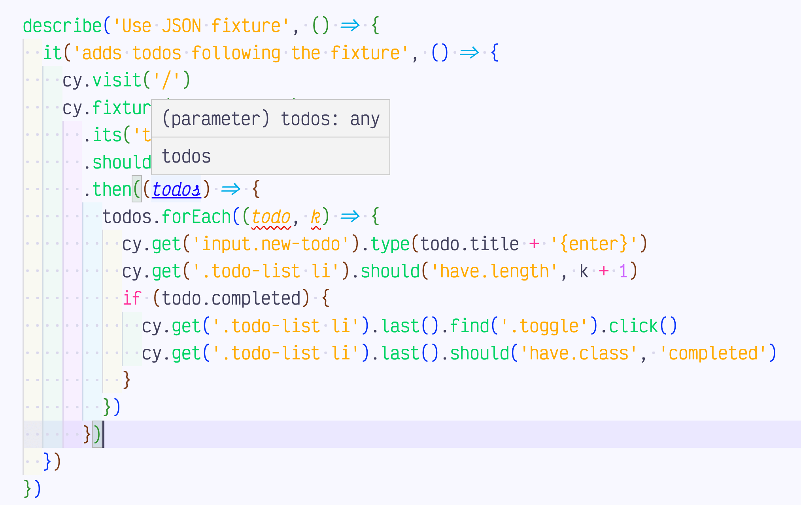
We can fix the callback function by adding an explicit type to the argument. I will add an interface Todo
1 | interface Todo { |
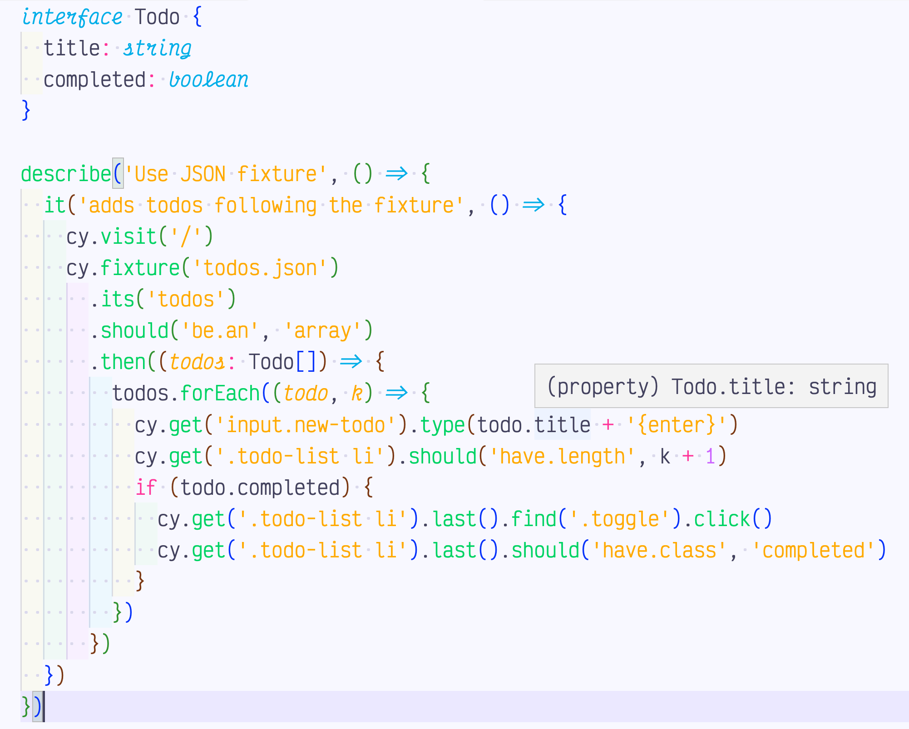
We can move such common types to the model.d.ts and export what is necessary:
1 | export interface Todo { |
1 | import type { Todo } from './model' |
Import JSON fixtures and cast the type
If our fixture data is static JSON, we could simply import the data in our specs. We need to allow TypeScript to resolve JSON files
1 | { |
If we import the data into the TS spec, it gets whatever the type the compiler can infer. Thus I like creating another variable to cast the imported object.
1 | import type { Todo } from './model' |
Cast yielded value from cy.fixture
In the code fragment below, we yield any from the cy.fixture command to the cy.its command, which yields any to the .then() callback. We know what cy.fixture loads, let's tell the compiler that. We know the JSON file has an object with "todos" property, and its value is a list of Todos. Let's tell the compiler that using the expression cy.fixture<{ todos: Todo[] }>:
1 | import type { Todo } from './model' |
If you inspect the commands after cy.fixture, you can see that cy.its for example yields the list of Todo objects, since it already "knows" the correct type of its subject. Nice.
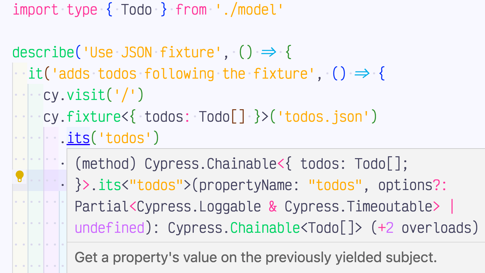
Cast cy.task value
1 | // this particular cy.task yields a number |
Cast aliased value
1 | // this particular alias keeps a number |
Step 13: Move to cypress.config.ts file
By default, I use cypress.config.js to configure the Cypress project. Let's move this file to TypeScript. We can now use import and export keywords, but TS complains about unknown top-level properties.
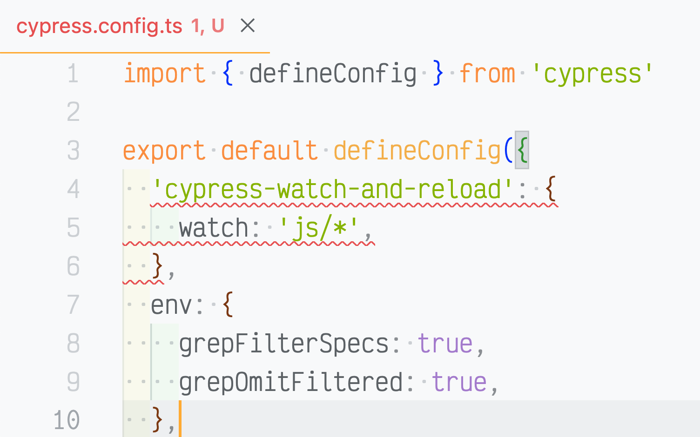
We should move those properties (used by the plugin cypress-watch-and-reload) to e2e.env object
1 | import { defineConfig } from 'cypress' |
You might get an error "[ERR_UNKNOWN_FILE_EXTENSION] Unknown file extension .ts" when you open Cypress for the first time.
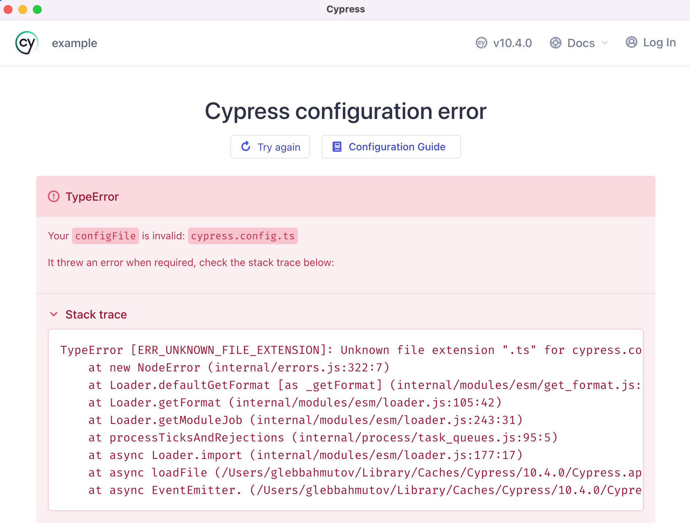
I found the simplest solution is to add type: module to your package.json file.
1 | { |
Step 14: Define custom commands
Let's say in our specs we use custom Cypress commands like cy.addTodo defined in the Cypress E2E support file
1 | Cypress.Commands.add('addTodo', (text: string) => { |
We can declare the type for the custom command in the index.d.ts file
1 | // extend Cypress "cy" global object interface with |
Now we can use custom commands in our specs without a problem
1 | it('adds new items using a custom command', () => { |
My thoughts
At my Mercari US we are currently at Step 8. We use JavaScript + a few TypeScript definition files for our custom commands. We lint all spec files on CI and keep the lint step green. We probably should move to full TypeScript, as our fixtures and mock object become hard to type using JSDoc.
See also
- my old blog post Use TypeScript With Cypress
- Trying TypeScript
- Cypress TypeScript docs